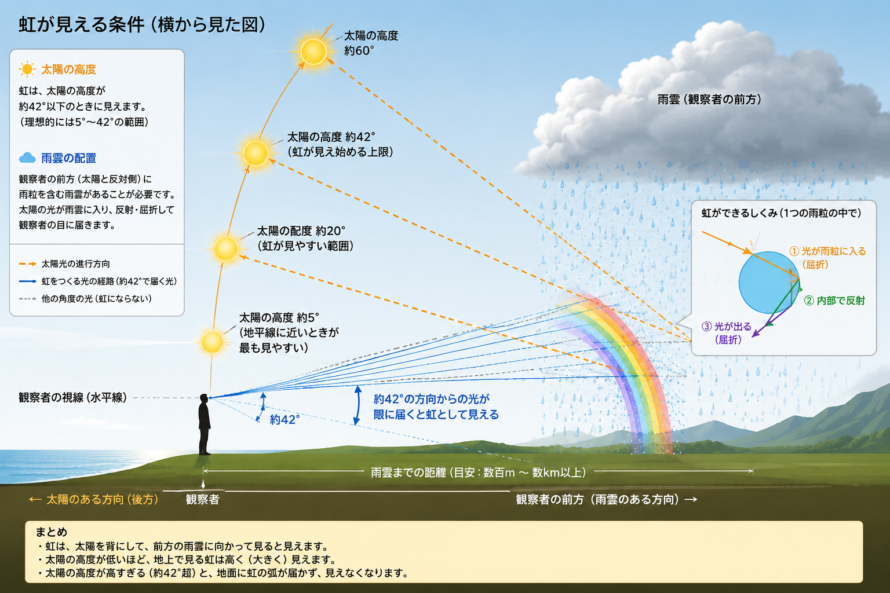

「絶対出てる」は言えない。でも「今すぐ外を見て」は言える。
東京圏の虹の可能性を、10分おきにお知らせします。
エリアを選んでマップを開く
虹は気まぐれで、天気予報には載りません。でも虹が出るかどうかは、 太陽の高さ・雲の量・雨の有無という条件が揃えばある程度わかります。
このマップは東京駅を中心とした半径約50km圏内を細かく区切り、 それぞれのエリアで「今、虹が出る条件が揃っているか」を0〜100のスコアで表示します。 10分おきに自動で更新されます。
虹が出ることを保証するものではありませんが、 条件が揃っているときに外を見るきっかけになれば嬉しいです。
以下の4つの条件をもとに、虹スコアを計算しています。
色のついた点がエリアごとの虹スコアです。点をタップすると詳細が表示されます。
虹は、太陽の光が雨粒の中に入り、内側で反射し、約42°の角度であなたの目に届くことで見えます。 だから太陽は後ろ、雨は前方にある必要があり、太陽の高さが重要なのです。

虹が出やすい時期は、雨上がりの朝と夕方。
空が気になったら開いてみてください。